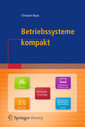

|
|
Wechseln Sie zur Seite in englischer Sprache
|
|  |
Die Hauptaufgabe eines Betriebssystems ist die Steuerung und Verwaltung der Betriebsmittel eines Rechnersystems sowie die Verteilung dieser Ressourcen an die Benutzer. Zu den Betriebsmitteln gehören Prozessoren, Hauptspeicher, Dateien, Ein-/Ausgabegeräte und Netzwerkdienste und generell alle Ressourcen, die mit dem Rechnersystem verbunden sind. Zusätzlich stellt ein Betriebssystem die Benutzerschnittstelle zur Steuerung des Systems sowie Schutzmechanismen, Werkzeuge, Bibliotheken und Entwicklungswerkzeuge bereit. Das Ziel dieser Vorlesung ist die Vermittlung der Grundlagen, Prinzipien, Probleme, und Lösungen, kurz gesagt der Konzepte auf denen die klassischen und modernen Betriebssysteme basieren. Die komplette Vorlesung (inkl. Übungen und Klausur) findet in englischer Sprache statt. Alle Vorlesungsunterlagen liegen mit identischem Inhalt in deutscher und englischer Sprache vor. Die Vorlesungsunterlagen sind die Grundlage für das Buch Betriebssysteme kompakt, das im April 2017 bei Springer Vieweg erschienen ist. ISBN: 978-3-662-53142-6 |
|
Diese Seite ist veraltet!
Aktualisierte und verbesserte Vorlesungsunterlagen befinden sich auf der Seite Betriebssysteme im Wintersemester 2019/2020. |
| Datum | Zeit | Raum | Veranstaltung | Inhalte |
|---|---|---|---|---|
| 18.04.2019 | 14:15-15:45 | 1-130 | Vorlesung | Besprechung von Foliensatz 1 |
| 25.04.2019 | 14:15-15:45 | 1-130 | Vorlesung | Besprechung von Foliensatz 2 |
| 02.05.2019 | 14:15-15:45 | 1-130 | Vorlesung | Besprechung von Foliensatz 3 (Folien 1-30) |
| 09.05.2019 | 14:15-15:45 | 1-130 | Vorlesung | Besprechung von Foliensatz 3 (Folien 31-33) + Foliensatz 4 |
| 16.05.2019 | 14:15-15:45 | 1-130 | Vorlesung | Besprechung von Foliensatz 5 (Folien 1-33) |
| 23.05.2019 | 14:15-15:45 | 1-130 | Vorlesung | Besprechung von Foliensatz 5 (Folien 34-42) + Foliensatz 6 (Folien 1-11) |
| 30.05.2019 | Christi Himmelfahrt | |||
| 06.06.2019 | 14:15-15:45 | 1-130 | Vorlesung | Besprechung von Foliensatz 6 (Folien 12-42) |
| 13.06.2019 | 14:15-15:45 | 1-130 | Vorlesung | Besprechung von Foliensatz 7 (Folien 1-39) |
| 20.06.2019 | Fronleichnam | |||
| 27.06.2019 | 14:15-15:45 | 1-130 | Vorlesung | Besprechung von Foliensatz 7 (Folien 40-51) + Foliensatz 8 |
| 04.07.2019 | 14:15-15:45 | 1-130 | Vorlesung | Besprechung von Foliensatz 9 (Folien 1-31) |
| 11.07.2019 | 14:15-15:45 | 1-130 | Vorlesung | Besprechung von Foliensatz 9 (Folien 32-78) |
| 18.07.2019 | 14:15-15:45 | 1-130 | Vorlesung | Fragestunde |
| 22.07.2019 | 12:00-13:30 | 4-109/110 | Klausur | Die Klausur deckt alle besprochenen Foliensätze und Übungsblätter ab |
| Foliensätze | Inhalte | ||
|---|---|---|---|
| Foliensatz 1 | Organisatorisches, Literatur, Generationen von Computersystemen und Betriebssystemen | ||
| Foliensatz 2 | Klassifikationen, Einzelprogrammbetrieb, Mehrprogrammbetrieb, Einzelbenutzerbetrieb, Mehrbenutzerbetrieb, Kernelarchitekturen | ||
| Foliensatz 3 | Von-Neumann-Architektur, Hardware-Komponenten eines Computers, Hauptpropessor, Speicher, Speicherhierarchie, Ersetzungsstrategien | ||
| Foliensatz 4 | Festplatten (HDD), Solid State Drives (SDD), Redundant Array of Independent Disks (RAID) | ||
| Foliensatz 5 | Speicherverwaltung, Real Mode, Protected Mode, virtueller Speicher | ||
| Foliensatz 6 | Dateien, Dateisysteme, Verzeichnisse, Blockadressierung, Journaling, Extents, Defragmentierung | ||
| Foliensatz 7 | Prozesse, Prozesskontext, Zustands-Prozessmodelle, Prozessverwaltung, Prozesse erzeugen und löschen, Systemaufrufe | ||
| Foliensatz 8 | Unterbrechungen, Dispatcher, Scheduling-Verfahren | ||
| Foliensatz 9 | Interprozesskommunikation, Synchronisation von Prozessen, Kommunikation zwischen Prozessen, Kooperation von Prozessen | ||
| Beispiel zu gemeinsamen Speichersegmenten (Shared Memory Segments) | |||
| Beispiel zu Nachrichtenwarteschlangen (Message Queues) | |||
| Beispiel zu aonymen Pipes | |||
| Beispiel zu benannten Pipes | |||
| Beispiel zu TCP-Sockets (Server) | |||
| Beispiel zu TCP-Sockets (Client) | |||
| Foliensatz 10 | Emulation, Virtualisierung | ||
| Übungsblätter | Inhalte | Lösungen | |||
|---|---|---|---|---|---|
| Übungsblatt 1 | Foliensatz 1 | ||||
| Übungsblatt 2 | Foliensatz 2 | ||||
| Übungsblatt 3 | Foliensatz 3 | ||||
| Übungsblatt 4 | Foliensatz 4 | ||||
| Übungsblatt 5 | Foliensatz 5 | ||||
| Übungsblatt 6 | Foliensatz 6 | ||||
| Übungsblatt 7 | Foliensatz 7 | ||||
| Übungsblatt 8 | Foliensatz 8 | ||||
| Übungsblatt 9 | Foliensatz 9 | ||||
| Übungsblatt 10 | Foliensatz 10 | ||||
Diese Dokumentation reicht nicht aus, um alle praktischen Übungen auf den Übungsblättern zu lösen. Sie ist aber ein guter Einstieg, wenn Sie wenig oder gar kein Vorwissen zu den Themengebieten Linux-Systemadministration und Shell-Programmierung haben. Die Dokumentation selbst ist nicht klausurrelevant, aber die praktischen Übungsaufgaben auf den Übungsblättern sind klausurrelevant.
| Linux und Shell-Programmierung - Teil 1 | Organisatorisches, Einführung, Hilfesystem, Verzeichnisse, Dateien |
| Linux und Shell-Programmierung - Teil 2 | Systemverwaltung, Zugriffsrechte, Verweise, Dateien durchsuchen, Editoren, Prozesse |
| Linux und Shell-Programmierung - Teil 3 | Datum und Uhrzeit, Ein-/Ausgaben umleiten, Zeichen zählen, Alias, Dateien suchen, Kommandos zeitsteuern |
| Linux und Shell-Programmierung - Teil 4 | Ressourcen überwachen, Sortieren, Umgebungsvariablen, Textausgaben, Mustervergleiche, Texte auswerten |
| Linux und Shell-Programmierung - Teil 5 | Grundlagen der Shell und von Shell-Skripten, Vergleichsoperationel, Kontrollstrukturen, Schleifen |
| Linux und Shell-Programmierung - Teil 6 | Arithmetik auswerten, Funktionen, Funktionsbibliotheken, Auswahlmenüs |
| Semester | Klausuren | Bearbeitungszeit | Hochschule | Lösungen | ||
|---|---|---|---|---|---|---|
| SS2019 | 90 Minuten | Frankfurt UAS | ||||
| SS2016 | 90 Minuten | Frankfurt UAS | ||||
| WS1516 | 90 Minuten | Frankfurt UAS | ||||
| SS2015 | 90 Minuten | Frankfurt UAS | ||||
| WS1415 | 90 Minuten | FH Frankfurt | ||||
| SS2014 | 90 Minuten | FH Frankfurt | ||||
| WS1314 | 90 Minuten | FH Frankfurt | ||||
| WS1314 | 60 Minuten | HS Mannheim | ||||
| SS2012 | 90 Minuten | HS Darmstadt | ||||
| SS2011 | 60 Minuten | HS Mannheim | ||||
| SS2009 | 60 Minuten | HS Mannheim | ||||
| WS0809 | 60 Minuten | HS Mannheim | ||||
| SS2008 | 60 Minuten | HS Mannheim | ||||
| WS0708 | 60 Minuten | HS Mannheim | ||||
| SS2007 | 70 Minuten | HS Mannheim | ||||
| Ergebnis der Klausur im SS2019 |
Zu erreichen bin ich am besten per E-Mail: christianbaun@fb2.fra-uas.de
|
Prof. Dr. Christian Baun Frankfurt University of Applied Sciences (1971-2014: Fachhochschule Frankfurt am Main) FB 2: Informatik und Ingenieurwissenschaften Stand: 21.9.2019 |
|